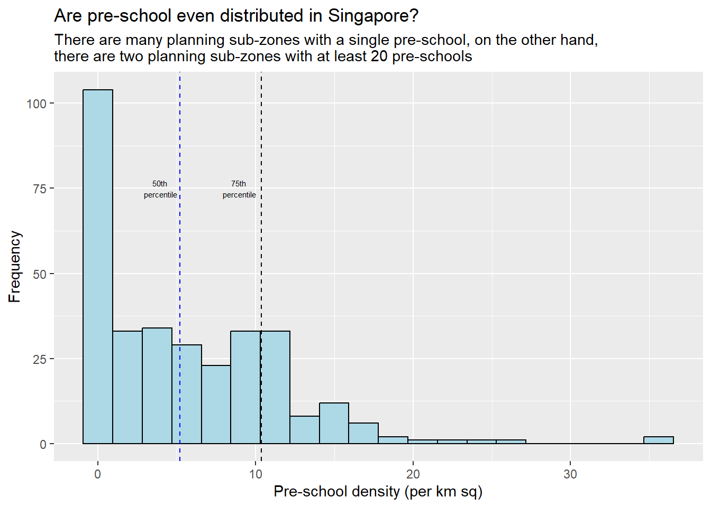

Hands-on Exercise 1.1: Geospatial Data Wrangling with R
1.1 Overview
In this hands-on exercise, I will learn how to import and wrangle geospatial data using appropriate R packages:
installing and loading sf and tidyverse packages into R environment,
importing geospatial data by using appropriate functions of sf package,
importing aspatial data by using appropriate function of readr package,
exploring the content of simple feature data frame by using appropriate Base R and sf functions,
assigning or transforming coordinate systems by using appropriate sf functions,
converting an aspatial data into a sf data frame by using appropriate function of sf package,
performing geoprocessing tasks by using appropriate functions of sf package,
performing data wrangling tasks by using appropriate functions of dplyr package and
performing Exploratory Data Analysis (EDA) by using appropriate functions from ggplot2 package.
1.2 Data Acquisition
In this hands-on exercise, data is acquired from the following sources:
Master Plan 2014 Subzone Boundary (Web) from data.gov.sg
Pre-Schools Location from data.gov.sg
Cycling Path from LTADataMall
Latest version of Singapore Airbnb listing data from Inside Airbnb
1.3 Getting Started
The code chunk below install and load sf and tidyverse packages into R environment:
sf for importing, managing, and processing geospatial data, and
tidyverse for performing data science tasks such as importing, wrangling and visualising data.
The sp package provides classes and methods for spatial data types in 2005. The sf package was released in 2016 to give standardise support for vector data in R. It is also coherent with tidyverse, that consists of the following (not exhaustive):
readr for importing csv data,
readxl for importing Excel worksheet,
tidyr for manipulating data,
dplyr for transforming data, and
ggplot2 for visualising data
1.4 Importing Geospatial data
The data that we will be importing takes the following forms:
MP14_SUBZONE_WEB_PL, a polygon feature layer in ESRI shapefile format,CyclingPath, a line feature layer in ESRI shapefile format, andPreSchool, a point feature layer in kml file format.
1.4.1 Importing polygon feature data in shapefile format
st_read() is a func from sf package, used to read files in shapefile format.
dsn- data source name (aka data path)
layer - shapefile name. No extensions like .shp, .dbf, .prj and .shx are needed.
Reading layer `MP14_SUBZONE_WEB_PL' from data source
`C:\yixin-neo\ISSS624_AGA\Hands-on_Ex1\data\geospatial' using driver `ESRI Shapefile'
Simple feature collection with 323 features and 15 fields
Geometry type: MULTIPOLYGON
Dimension: XY
Bounding box: xmin: 2667.538 ymin: 15748.72 xmax: 56396.44 ymax: 50256.33
Projected CRS: SVY21geospatial objects are multipolygon features
total of 323 multipolygon features and 15 fields in
mpszsimple feature data frame.mpszis in svy21 projected coordinates systemsx extend and y extend of the data are given
| OBJECTID | SUBZONE_NO | SUBZONE_N | SUBZONE_C | CA_IND | PLN_AREA_N | PLN_AREA_C | REGION_N | REGION_C | INC_CRC | FMEL_UPD_D | X_ADDR | Y_ADDR | SHAPE_Leng | SHAPE_Area | geometry |
|---|---|---|---|---|---|---|---|---|---|---|---|---|---|---|---|
| 1 | 1 | MARINA SOUTH | MSSZ01 | Y | MARINA SOUTH | MS | CENTRAL REGION | CR | 5ED7EB253F99252E | 2014-12-05 | 31595.84 | 29220.19 | 5267.381 | 1630379.3 | MULTIPOLYGON (((31495.56 30… |
| 2 | 1 | PEARL’S HILL | OTSZ01 | Y | OUTRAM | OT | CENTRAL REGION | CR | 8C7149B9EB32EEFC | 2014-12-05 | 28679.06 | 29782.05 | 3506.107 | 559816.2 | MULTIPOLYGON (((29092.28 30… |
| 3 | 3 | BOAT QUAY | SRSZ03 | Y | SINGAPORE RIVER | SR | CENTRAL REGION | CR | C35FEFF02B13E0E5 | 2014-12-05 | 29654.96 | 29974.66 | 1740.926 | 160807.5 | MULTIPOLYGON (((29932.33 29… |
1.4.2 Importing polyline feature data in shapefile form
The code chunk below uses st_read() function of sf package to import CyclingPath shapefile into R as line feature data frame.
Reading layer `CyclingPathGazette' from data source
`C:\yixin-neo\ISSS624_AGA\Hands-on_Ex1\data\geospatial' using driver `ESRI Shapefile'
Simple feature collection with 2248 features and 2 fields
Geometry type: MULTILINESTRING
Dimension: XY
Bounding box: xmin: 11854.32 ymin: 28347.98 xmax: 42626.09 ymax: 48948.15
Projected CRS: SVY211.4.3 Importing GIS data in kml format
The pre-schools-location-kml is in kml format.
Reading layer `PRESCHOOLS_LOCATION' from data source
`C:\yixin-neo\ISSS624_AGA\Hands-on_Ex1\data\geospatial\pre-schools-location-kml.kml'
using driver `KML'
Simple feature collection with 1925 features and 2 fields
Geometry type: POINT
Dimension: XYZ
Bounding box: xmin: 103.6824 ymin: 1.247759 xmax: 103.9897 ymax: 1.462134
z_range: zmin: 0 zmax: 0
Geodetic CRS: WGS 84Note that preschool is in WSG84 coordinates system (3D).
1.5.1 Working with st_geometry()
The column in the sf data.frame that contains the geometries is a list, of class sfc. We can retrieve the geometry list-column in this case by mpsz$geom or mpsz[[1]], but the more general way uses st_geometry() as shown in the code chunk below.
1.5.2 Working with glimpse()
Beside the basic feature information, we also would like to learn more about the associated attribute information in the data frame. This is the time you will find glimpse() of dplyr. very handy as shown in the code chunk below.
Rows: 6
Columns: 16
$ OBJECTID <int> 1, 2, 3, 4, 5, 6
$ SUBZONE_NO <int> 1, 1, 3, 8, 3, 7
$ SUBZONE_N <chr> "MARINA SOUTH", "PEARL'S HILL", "BOAT QUAY", "HENDERSON HIL…
$ SUBZONE_C <chr> "MSSZ01", "OTSZ01", "SRSZ03", "BMSZ08", "BMSZ03", "BMSZ07"
$ CA_IND <chr> "Y", "Y", "Y", "N", "N", "N"
$ PLN_AREA_N <chr> "MARINA SOUTH", "OUTRAM", "SINGAPORE RIVER", "BUKIT MERAH",…
$ PLN_AREA_C <chr> "MS", "OT", "SR", "BM", "BM", "BM"
$ REGION_N <chr> "CENTRAL REGION", "CENTRAL REGION", "CENTRAL REGION", "CENT…
$ REGION_C <chr> "CR", "CR", "CR", "CR", "CR", "CR"
$ INC_CRC <chr> "5ED7EB253F99252E", "8C7149B9EB32EEFC", "C35FEFF02B13E0E5",…
$ FMEL_UPD_D <date> 2014-12-05, 2014-12-05, 2014-12-05, 2014-12-05, 2014-12-05,…
$ X_ADDR <dbl> 31595.84, 28679.06, 29654.96, 26782.83, 26201.96, 25358.82
$ Y_ADDR <dbl> 29220.19, 29782.05, 29974.66, 29933.77, 30005.70, 29991.38
$ SHAPE_Leng <dbl> 5267.381, 3506.107, 1740.926, 3313.625, 2825.594, 4428.913
$ SHAPE_Area <dbl> 1630379.3, 559816.2, 160807.5, 595428.9, 387429.4, 1030378.8
$ geometry <MULTIPOLYGON [m]> MULTIPOLYGON (((31495.56 30..., MULTIPOLYGON (((29092.28 30…glimpse() report reveals the data type of each fields. For example FMEL-UPD_D field is in date data type and X_ADDR, Y_ADDR, SHAPE_L and SHAPE_AREA fields are all in double-precision values.
1.5.3 Working with head()
Sometimes we would like to reveal complete information of a feature object, this is the job of head() of Base R
Simple feature collection with 3 features and 15 fields
Geometry type: MULTIPOLYGON
Dimension: XY
Bounding box: xmin: 28160.23 ymin: 28369.47 xmax: 32362.39 ymax: 30247.18
Projected CRS: SVY21
OBJECTID SUBZONE_NO SUBZONE_N SUBZONE_C CA_IND PLN_AREA_N PLN_AREA_C
1 1 1 MARINA SOUTH MSSZ01 Y MARINA SOUTH MS
2 2 1 PEARL'S HILL OTSZ01 Y OUTRAM OT
3 3 3 BOAT QUAY SRSZ03 Y SINGAPORE RIVER SR
REGION_N REGION_C INC_CRC FMEL_UPD_D X_ADDR Y_ADDR
1 CENTRAL REGION CR 5ED7EB253F99252E 2014-12-05 31595.84 29220.19
2 CENTRAL REGION CR 8C7149B9EB32EEFC 2014-12-05 28679.06 29782.05
3 CENTRAL REGION CR C35FEFF02B13E0E5 2014-12-05 29654.96 29974.66
SHAPE_Leng SHAPE_Area geometry
1 5267.381 1630379.3 MULTIPOLYGON (((31495.56 30...
2 3506.107 559816.2 MULTIPOLYGON (((29092.28 30...
3 1740.926 160807.5 MULTIPOLYGON (((29932.33 29...1.6 Plotting the Geospatial Data
In geospatial data science, by looking at the feature information is not enough. We are also interested to visualise the geospatial features. One of the ways is to use the plot() of R Graphic.

The default plot of an sf object is a multi-plot of all attributes, up to a reasonable maximum as shown above. We can, however, choose to plot only the geometry (multi-polygon) by using the code chunk below.

Alternatively, we can also choose the plot the sf object by using a specific attribute as shown in the code chunk below.
1.7 Working with Projection
Map projection is an important property of a geospatial data. In order to perform geoprocessing using two geospatial data, we need to ensure that both geospatial data are projected using similar coordinate system.
In this section, you will learn how to project a simple feature data frame from one coordinate system to another coordinate system. The technical term of this process is called projection transformation.
1.7.1 Assigning EPSG code to a simple feature data frame
Common issues:
coordinate system of the source data was missing (such as due to missing .proj for ESRI shapefile)
wrongly assigned during the importing process
Using the st_crs() to check in detail of the mpszreveals that although it claims to be in svy21 (singapore proj sys), reading until end of print shows that it is wrongly in EPSG9001 (singapore uses epsg3414)
Coordinate Reference System:
User input: SVY21
wkt:
PROJCRS["SVY21",
BASEGEOGCRS["SVY21[WGS84]",
DATUM["World Geodetic System 1984",
ELLIPSOID["WGS 84",6378137,298.257223563,
LENGTHUNIT["metre",1]],
ID["EPSG",6326]],
PRIMEM["Greenwich",0,
ANGLEUNIT["Degree",0.0174532925199433]]],
CONVERSION["unnamed",
METHOD["Transverse Mercator",
ID["EPSG",9807]],
PARAMETER["Latitude of natural origin",1.36666666666667,
ANGLEUNIT["Degree",0.0174532925199433],
ID["EPSG",8801]],
PARAMETER["Longitude of natural origin",103.833333333333,
ANGLEUNIT["Degree",0.0174532925199433],
ID["EPSG",8802]],
PARAMETER["Scale factor at natural origin",1,
SCALEUNIT["unity",1],
ID["EPSG",8805]],
PARAMETER["False easting",28001.642,
LENGTHUNIT["metre",1],
ID["EPSG",8806]],
PARAMETER["False northing",38744.572,
LENGTHUNIT["metre",1],
ID["EPSG",8807]]],
CS[Cartesian,2],
AXIS["(E)",east,
ORDER[1],
LENGTHUNIT["metre",1,
ID["EPSG",9001]]],
AXIS["(N)",north,
ORDER[2],
LENGTHUNIT["metre",1,
ID["EPSG",9001]]]]In order to assign the correct EPSG code to mpsz data frame, st_set_crs() of sf package is used as shown in the code chunk below.
Recheck
Coordinate Reference System:
User input: EPSG:3414
wkt:
PROJCRS["SVY21 / Singapore TM",
BASEGEOGCRS["SVY21",
DATUM["SVY21",
ELLIPSOID["WGS 84",6378137,298.257223563,
LENGTHUNIT["metre",1]]],
PRIMEM["Greenwich",0,
ANGLEUNIT["degree",0.0174532925199433]],
ID["EPSG",4757]],
CONVERSION["Singapore Transverse Mercator",
METHOD["Transverse Mercator",
ID["EPSG",9807]],
PARAMETER["Latitude of natural origin",1.36666666666667,
ANGLEUNIT["degree",0.0174532925199433],
ID["EPSG",8801]],
PARAMETER["Longitude of natural origin",103.833333333333,
ANGLEUNIT["degree",0.0174532925199433],
ID["EPSG",8802]],
PARAMETER["Scale factor at natural origin",1,
SCALEUNIT["unity",1],
ID["EPSG",8805]],
PARAMETER["False easting",28001.642,
LENGTHUNIT["metre",1],
ID["EPSG",8806]],
PARAMETER["False northing",38744.572,
LENGTHUNIT["metre",1],
ID["EPSG",8807]]],
CS[Cartesian,2],
AXIS["northing (N)",north,
ORDER[1],
LENGTHUNIT["metre",1]],
AXIS["easting (E)",east,
ORDER[2],
LENGTHUNIT["metre",1]],
USAGE[
SCOPE["Cadastre, engineering survey, topographic mapping."],
AREA["Singapore - onshore and offshore."],
BBOX[1.13,103.59,1.47,104.07]],
ID["EPSG",3414]]Notice that the EPSG code is 3414 now.
1.7.2 Transforming the projection of preschool from wgs84 to svy21 (EPSG3414).
In geospatial analytics, it is very common for us to transform the original data from geographic coordinate system (3D) to projected coordinate system (2D). This is because geographic coordinate system is not appropriate if the analysis need to use distance or/and area measurements.
Let us take preschool simple feature data frame as an example. The print below reveals that it is in wgs84 coordinate system (3D).
Geometry set for 1925 features
Geometry type: POINT
Dimension: XYZ
Bounding box: xmin: 103.6824 ymin: 1.247759 xmax: 103.9897 ymax: 1.462134
z_range: zmin: 0 zmax: 0
Geodetic CRS: WGS 84
First 5 geometries:Coordinate Reference System:
User input: WGS 84
wkt:
GEOGCRS["WGS 84",
DATUM["World Geodetic System 1984",
ELLIPSOID["WGS 84",6378137,298.257223563,
LENGTHUNIT["metre",1]]],
PRIMEM["Greenwich",0,
ANGLEUNIT["degree",0.0174532925199433]],
CS[ellipsoidal,2],
AXIS["geodetic latitude (Lat)",north,
ORDER[1],
ANGLEUNIT["degree",0.0174532925199433]],
AXIS["geodetic longitude (Lon)",east,
ORDER[2],
ANGLEUNIT["degree",0.0174532925199433]],
ID["EPSG",4326]]Note that st_set_crs() is not appropriate and st_transform() of sf package should be used. This is because we need to reproject preschool from one coordinate system to another coordinate system mathemetically.
Let us perform the projection transformation by using the code chunk below.
Recheck
Geometry set for 1925 features
Geometry type: POINT
Dimension: XYZ
Bounding box: xmin: 11203.01 ymin: 25596.33 xmax: 45404.24 ymax: 49300.88
z_range: zmin: 0 zmax: 0
Projected CRS: SVY21 / Singapore TM
First 5 geometries:Notice that it is in svy21 projected coordinate system now. Furthermore, if we refer to Bounding box:, the values are greater than 0-360 range of decimal degree commonly used by most of the geographic coordinate systems.
1.8 Importing and Converting An Aspatial Data
In practice, it is not unusual that we will come across data such as listing of Inside Airbnb. We call this kind of data aspatial data. This is because it is not a geospatial data but among the data fields, there are two fields that capture the x- (long) and y-coordinates (lat) of the data points.
In this section, we will learn how to
import an aspatial data into R environment and save it as a tibble data frame
convert it into a simple feature data frame.
The listings.csv data downloaded from AirBnb will be used.
1.8.1 Importing the aspatial data
Since listings data set is in csv file format, we will use read_csv() of readr package to import listing.csv as shown the code chunk below. The output R object is called listings and it is a tibble data frame.
[1] "spec_tbl_df" "tbl_df" "tbl" "data.frame" After importing the data file into R, it is important for us to examine if the data file has been imported correctly.
The code chunk below shows list() of Base R instead of glimpse() is used to do the job.
[[1]]
# A tibble: 4,161 × 18
id name host_id host_name neighbourhood_group neighbourhood latitude
<dbl> <chr> <dbl> <chr> <chr> <chr> <dbl>
1 50646 Pleasant… 227796 Sujatha Central Region Bukit Timah 1.33
2 71609 Ensuite … 367042 Belinda East Region Tampines 1.35
3 71896 B&B Roo… 367042 Belinda East Region Tampines 1.35
4 71903 Room 2-n… 367042 Belinda East Region Tampines 1.35
5 275344 15 mins … 1439258 Kay Central Region Bukit Merah 1.29
6 289234 Booking … 367042 Belinda East Region Tampines 1.34
7 294281 5 mins w… 1521514 Elizabeth Central Region Newton 1.31
8 324945 Cozy Blu… 1439258 Kay Central Region Bukit Merah 1.29
9 330089 Cozy Blu… 1439258 Kay Central Region Bukit Merah 1.29
10 330095 10 mins … 1439258 Kay Central Region Bukit Merah 1.29
# ℹ 4,151 more rows
# ℹ 11 more variables: longitude <dbl>, room_type <chr>, price <dbl>,
# minimum_nights <dbl>, number_of_reviews <dbl>, last_review <date>,
# reviews_per_month <dbl>, calculated_host_listings_count <dbl>,
# availability_365 <dbl>, number_of_reviews_ltm <dbl>, license <chr>Other ways of displaying tabular data in R:
| id | name | host_id | host_name | neighbourhood_group | neighbourhood | latitude | longitude | room_type | price | minimum_nights | number_of_reviews | last_review | reviews_per_month | calculated_host_listings_count | availability_365 | number_of_reviews_ltm | license |
|---|---|---|---|---|---|---|---|---|---|---|---|---|---|---|---|---|---|
| 50646 | Pleasant Room along Bukit Timah | 227796 | Sujatha | Central Region | Bukit Timah | 1.33432 | 103.7852 | Private room | 80 | 92 | 18 | 2014-12-26 | 0.18 | 1 | 365 | 0 | NA |
| 71609 | Ensuite Room (Room 1 & 2) near EXPO | 367042 | Belinda | East Region | Tampines | 1.34537 | 103.9589 | Private room | 145 | 92 | 20 | 2020-01-17 | 0.15 | 6 | 340 | 0 | NA |
| 71896 | B&B Room 1 near Airport & EXPO | 367042 | Belinda | East Region | Tampines | 1.34754 | 103.9596 | Private room | 85 | 92 | 24 | 2019-10-13 | 0.18 | 6 | 265 | 0 | NA |
| 71903 | Room 2-near Airport & EXPO | 367042 | Belinda | East Region | Tampines | 1.34531 | 103.9610 | Private room | 85 | 92 | 47 | 2020-01-09 | 0.34 | 6 | 365 | 0 | NA |
| 275344 | 15 mins to Outram MRT Single Room | 1439258 | Kay | Central Region | Bukit Merah | 1.28836 | 103.8114 | Private room | 49 | 60 | 14 | 2022-07-09 | 0.11 | 44 | 296 | 1 | S0399 |
| 289234 | Booking for 3 bedrooms | 367042 | Belinda | East Region | Tampines | 1.34490 | 103.9598 | Private room | 184 | 92 | 12 | 2019-01-01 | 0.10 | 6 | 285 | 0 | NA |
| AirBnB listings | |||||||||||||||||
| id | name | host_id | host_name | neighbourhood_group | neighbourhood | latitude | longitude | room_type | price | minimum_nights | number_of_reviews | last_review | reviews_per_month | calculated_host_listings_count | availability_365 | number_of_reviews_ltm | license |
|---|---|---|---|---|---|---|---|---|---|---|---|---|---|---|---|---|---|
| 50646 | Pleasant Room along Bukit Timah | 227796 | Sujatha | Central Region | Bukit Timah | 1.33432 | 103.7852 | Private room | 80 | 92 | 18 | 2014-12-26 | 0.18 | 1 | 365 | 0 | NA |
| 71609 | Ensuite Room (Room 1 & 2) near EXPO | 367042 | Belinda | East Region | Tampines | 1.34537 | 103.9589 | Private room | 145 | 92 | 20 | 2020-01-17 | 0.15 | 6 | 340 | 0 | NA |
| 71896 | B&B Room 1 near Airport & EXPO | 367042 | Belinda | East Region | Tampines | 1.34754 | 103.9596 | Private room | 85 | 92 | 24 | 2019-10-13 | 0.18 | 6 | 265 | 0 | NA |
| 71903 | Room 2-near Airport & EXPO | 367042 | Belinda | East Region | Tampines | 1.34531 | 103.9610 | Private room | 85 | 92 | 47 | 2020-01-09 | 0.34 | 6 | 365 | 0 | NA |
| 275344 | 15 mins to Outram MRT Single Room | 1439258 | Kay | Central Region | Bukit Merah | 1.28836 | 103.8114 | Private room | 49 | 60 | 14 | 2022-07-09 | 0.11 | 44 | 296 | 1 | S0399 |
| 289234 | Booking for 3 bedrooms | 367042 | Belinda | East Region | Tampines | 1.34490 | 103.9598 | Private room | 184 | 92 | 12 | 2019-01-01 | 0.10 | 6 | 285 | 0 | NA |
Two useful fields we need are latitude and longitude and they are in decimal degree format. As a best guess, we will assume that the data is in wgs84 Geographic Coordinate System.
1.8.2 Creating a simple feature data frame from an aspatial data frame
The code chunk below converts listing data frame into a simple feature data frame by using st_as_sf() of sf packages.
EPSG 4326 is associated with WGS84.
listings_sf <- st_as_sf(listings,
coords = c('longitude','latitude'),
crs=4326) %>%
st_transform(crs=3414)
class(listings_sf)[1] "sf" "tbl_df" "tbl" "data.frame"Things to learn from the arguments above:
coords argument requires you to provide the column name of the x-coordinates first then followed by the column name of the y-coordinates.
crs argument requires you to provide the coordinates system in epsg format. EPSG: 4326 is wgs84 Geographic Coordinate System and EPSG: 3414 is Singapore SVY21 Projected Coordinate System. You can search for other country’s epsg code by referring to epsg.io.
Let us examine the content of our newly created sf dataframe
Rows: 4,161
Columns: 17
$ id <dbl> 50646, 71609, 71896, 71903, 275344, 289…
$ name <chr> "Pleasant Room along Bukit Timah", "Ens…
$ host_id <dbl> 227796, 367042, 367042, 367042, 1439258…
$ host_name <chr> "Sujatha", "Belinda", "Belinda", "Belin…
$ neighbourhood_group <chr> "Central Region", "East Region", "East …
$ neighbourhood <chr> "Bukit Timah", "Tampines", "Tampines", …
$ room_type <chr> "Private room", "Private room", "Privat…
$ price <dbl> 80, 145, 85, 85, 49, 184, 79, 49, 55, 5…
$ minimum_nights <dbl> 92, 92, 92, 92, 60, 92, 92, 60, 60, 60,…
$ number_of_reviews <dbl> 18, 20, 24, 47, 14, 12, 133, 17, 12, 3,…
$ last_review <date> 2014-12-26, 2020-01-17, 2019-10-13, 20…
$ reviews_per_month <dbl> 0.18, 0.15, 0.18, 0.34, 0.11, 0.10, 1.0…
$ calculated_host_listings_count <dbl> 1, 6, 6, 6, 44, 6, 7, 44, 44, 44, 6, 7,…
$ availability_365 <dbl> 365, 340, 265, 365, 296, 285, 365, 181,…
$ number_of_reviews_ltm <dbl> 0, 0, 0, 0, 1, 0, 0, 3, 2, 0, 1, 0, 0, …
$ license <chr> NA, NA, NA, NA, "S0399", NA, NA, "S0399…
$ geometry <POINT [m]> POINT (22646.02 35167.9), POINT (…A new column geometry has been added at the back of the df. Additionally, lat long columns were both dropped from the df.
1.9 Geoprocessing with sf package
Besides providing functions to handling (i.e. importing, exporting, assigning projection, transforming projection etc) geospatial data, sf package also offers a wide range of geoprocessing (also known as GIS analysis) functions.
In this section, we will learn how to perform two commonly used geoprocessing functions, namely buffering and point in polygon count.
1.9.1 Buffering
The scenario:
The authority is planning to upgrade the exiting cycling path. To do so, they need to acquire 5 metres of reserved land on the both sides of the current cycling path. You are tasked to determine the extend of the land need to be acquired and their total area.
The solution:
A buffer is a zone around a spatial object, recall that cyclingpath is a multiline-string sf object.
Geometry set for 2248 features
Geometry type: MULTILINESTRING
Dimension: XY
Bounding box: xmin: 11854.32 ymin: 28347.98 xmax: 42626.09 ymax: 48948.15
Projected CRS: SVY21
First 5 geometries:Firstly, st_buffer() of sf package is used to compute the 5-meter buffers around cyclingpath .
Take a peak at this df before calculating area.
Simple feature collection with 6 features and 2 fields
Geometry type: POLYGON
Dimension: XY
Bounding box: xmin: 15867.37 ymin: 36795.67 xmax: 16026.95 ymax: 36953.73
Projected CRS: SVY21
PLANNING_A PLANNING_1 geometry
1 <NA> <NA> POLYGON ((16004.15 36799.78...
2 <NA> <NA> POLYGON ((16013.15 36849.86...
3 <NA> <NA> POLYGON ((16016.91 36892.98...
4 <NA> <NA> POLYGON ((16017.59 36864, 1...
5 <NA> <NA> POLYGON ((16022.36 36900.57...
6 <NA> <NA> POLYGON ((15903.87 36941.12...Now, we will calculate the area of the buffers as shown in the code chunk below.
We are also adding a derived column to buffer_cycling too.
| PLANNING_A | PLANNING_1 | geometry | AREA |
|---|---|---|---|
| NA | NA | POLYGON ((16004.15 36799.78… | 186.2934 [m^2] |
| NA | NA | POLYGON ((16013.15 36849.86… | 293.4840 [m^2] |
| NA | NA | POLYGON ((16016.91 36892.98… | 284.8275 [m^2] |
| NA | NA | POLYGON ((16017.59 36864, 1… | 144.8915 [m^2] |
| NA | NA | POLYGON ((16022.36 36900.57… | 281.2016 [m^2] |
| NA | NA | POLYGON ((15903.87 36941.12… | 398.7081 [m^2] |
Lastly, sum() of Base R will be used to derive the total land involved
Good Job!
Mission Accomplished!
1.9.2 Point-in-polygon count
The scenario:
A pre-school service group want to find out the numbers of pre-schools in each Planning Subzone.
Before that, lets double confirm both data are using same projection system.
The solution:
The code chunk below performs two operations at one go.
identify pre-schools located inside each Planning Subzone by using st_intersects().
length() of Base R is used to calculate numbers of pre-schools that fall inside each planning subzone.
Now check summary stats of PreSch Count column in each subzone.
Min. 1st Qu. Median Mean 3rd Qu. Max.
0.00 0.00 3.00 5.96 9.00 58.00 To list the planning subzone with the most number of pre-school, the top_n() of dplyr package can be used.
| OBJECTID | SUBZONE_NO | SUBZONE_N | SUBZONE_C | CA_IND | PLN_AREA_N | PLN_AREA_C | REGION_N | REGION_C | INC_CRC | FMEL_UPD_D | X_ADDR | Y_ADDR | SHAPE_Leng | SHAPE_Area | PreSch Count | geometry |
|---|---|---|---|---|---|---|---|---|---|---|---|---|---|---|---|---|
| 189 | 2 | TAMPINES EAST | TMSZ02 | N | TAMPINES | TM | EAST REGION | ER | 21658EAAF84F4D8D | 2014-12-05 | 41122.55 | 37392.39 | 10180.624 | 4339824 | 58 | MULTIPOLYGON (((42196.76 38… |
| 290 | 3 | WOODLANDS EAST | WDSZ03 | N | WOODLANDS | WD | NORTH REGION | NR | C90769E43EE6B0F2 | 2014-12-05 | 24506.64 | 46991.63 | 6603.608 | 2553464 | 47 | MULTIPOLYGON (((24786.75 46… |
| 199 | 4 | BEDOK NORTH | BDSZ04 | N | BEDOK | BD | EAST REGION | ER | A2254301F85C1EDF | 2014-12-05 | 39429.21 | 34737.62 | 8414.962 | 3203663 | 31 | MULTIPOLYGON (((40284.24 35… |
To calculate the density (# schools/subzone area) of preschool by planning subzone :
mpsz3414 <- mpsz3414 %>%
mutate(AREA = st_area(mpsz3414),
DENSITY = `PreSch Count` /AREA * 1000000) %>%
arrange(desc(DENSITY))
kable(head(mpsz3414))| OBJECTID | SUBZONE_NO | SUBZONE_N | SUBZONE_C | CA_IND | PLN_AREA_N | PLN_AREA_C | REGION_N | REGION_C | INC_CRC | FMEL_UPD_D | X_ADDR | Y_ADDR | SHAPE_Leng | SHAPE_Area | PreSch Count | AREA | DENSITY | geometry |
|---|---|---|---|---|---|---|---|---|---|---|---|---|---|---|---|---|---|---|
| 27 | 8 | CECIL | DTSZ08 | Y | DOWNTOWN CORE | DT | CENTRAL REGION | CR | 65AA82AF6F4D925D | 2014-12-05 | 29730.20 | 29011.33 | 2116.0947 | 196619.86 | 7 | 196619.86 [m^2] | 35.60169 [1/m^2] | MULTIPOLYGON (((29808.18 28… |
| 278 | 3 | MANDAI ESTATE | MDSZ03 | N | MANDAI | MD | NORTH REGION | NR | F6266F7368DBB9AB | 2014-12-05 | 27082.70 | 45367.46 | 1633.7084 | 143137.94 | 5 | 143137.94 [m^2] | 34.93134 [1/m^2] | MULTIPOLYGON (((27119.56 45… |
| 37 | 4 | PHILLIP | DTSZ04 | Y | DOWNTOWN CORE | DT | CENTRAL REGION | CR | 615D4EDDEF809F8E | 2014-12-05 | 29706.72 | 29744.91 | 871.5549 | 39437.94 | 1 | 39437.94 [m^2] | 25.35630 [1/m^2] | MULTIPOLYGON (((29814.11 29… |
| 291 | 3 | SEMBAWANG CENTRAL | SBSZ03 | N | SEMBAWANG | SB | NORTH REGION | NR | 772A64AB9A93FC3A | 2014-12-05 | 26268.73 | 47558.08 | 3955.1176 | 962437.40 | 23 | 962437.40 [m^2] | 23.89766 [1/m^2] | MULTIPOLYGON (((26311.14 46… |
| 253 | 3 | SERANGOON NORTH | SGSZ03 | N | SERANGOON | SG | NORTH-EAST REGION | NER | C685042EC58E5C55 | 2014-12-05 | 32458.80 | 39597.64 | 3610.7324 | 684704.30 | 15 | 684704.30 [m^2] | 21.90727 [1/m^2] | MULTIPOLYGON (((32860.5 397… |
| 272 | 3 | SENGKANG TOWN CENTRE | SESZ03 | N | SENGKANG | SE | NORTH-EAST REGION | NER | 5A2D0E9E6B285069 | 2014-12-05 | 35163.81 | 41501.14 | 5216.4005 | 1455507.86 | 30 | 1455507.86 [m^2] | 20.61136 [1/m^2] | MULTIPOLYGON (((35615.75 40… |
The table above shows the top 6 highest density subzones .
1.10 Explorotary Data Analysis (EDA)
In practice, many geospatial analytics start with Exploratory Data Analysis. In this section, wewill learn how to use appropriate ggplot2 functions to create functional and yet truthful statistical graphs for EDA purposes.
Firstly, we will plot a histogram to reveal the distribution of PreSch Density. Conventionally, hist() of R Graphics will be used as shown in the code chunk below.
Although the syntax is very easy to use however the output is far from meeting publication quality. Furthermore, the function has limited room for further customisation.
In the code chunk below, appropriate ggplot2 functions will be used.
q <- quantile(as.numeric(mpsz3414$DENSITY), probs = c(0.25, 0.5, 0.75))
ggplot(data=mpsz3414,
aes(x= as.numeric(DENSITY)))+
geom_histogram(bins=20,
color="black",
fill="light blue") +
geom_vline(xintercept = q[2]+1, linetype='dashed', size = 0.5, color='blue') +
geom_vline(xintercept = q[3]+1, linetype='dashed', size = 0.5) +
annotate('text' , x= 4, y=75, label='50th \npercentile', size = 2) +
annotate('text' , x= 9, y=75, label='75th \npercentile', size = 2) +
labs(title = "Are pre-school even distributed in Singapore?",
subtitle= "There are many planning sub-zones with a single pre-school, on the other hand, \nthere are two planning sub-zones with at least 20 pre-schools",
x = "Pre-school density (per km sq)",
y = "Frequency")
library(plotly)
q <- quantile(as.numeric(mpsz3414$DENSITY), probs = c(0.25, 0.5, 0.75))
p <- ggplot(data=mpsz3414,
aes(x= as.numeric(DENSITY)))+
geom_histogram(bins=20,
color="black",
fill="light blue") +
geom_vline(xintercept = q[2]+1, linetype='dashed', size = 0.5, color='blue') +
geom_vline(xintercept = q[3]+1, linetype='dashed', size = 0.5) +
annotate('text' , x= 4, y=75, label='50th \npercentile', size = 2) +
annotate('text' , x= 9, y=75, label='75th \npercentile', size = 2) +
labs(title = "Are pre-school even distributed in Singapore?",
subtitle= "There are many planning sub-zones with a single pre-school, on the other hand, \nthere are two planning sub-zones with at least 20 pre-schools",
x = "Pre-school density (per km sq)",
y = "Frequency")
ggplotly(p)DIY: Using ggplot2 method, plot a scatterplot showing the relationship between Pre-school Density and Pre-school Count.
Theories
KML and shapefiles
A KMZ file is a zipped (or compressed) KML file, and a SHZ is a zipped/compressed Shapefile.
A shapefile is an Esri vector data storage format for storing the location, shape, and attributes of geographic features. It is stored as a set of related files and contains one feature class.
The shapefile format can spatially describe vector features: points, lines, and polygons, representing, for example, water wells, rivers, and lakes. Each item usually has attributes that describe it, such as name or temperature.
KML and Shapefiles could contain the exact same data, however KML (Keyhole Markup Language) is much more suited to displaying time based track information, whereas shapefiles are more suited to displaying Geometries, like boundaries, areas, roads, etc.
Shapefiles are composed of 3 mandatory files
· . shp (geometry), <- multipolygon, polylines or points. Can only be one type in each file , can combined in layers
· . dbf (attributes) <- table
· . shx (index) <- binds first two together
GCS [Geographic Coordinate System] (3D) and PCS [Projected Coordinate System ] (2D)
GCS: uses lat, long, elevation to locate positions on Earth. Units are in degree and metres. Earth is represented as a sphere. Eg. WGS84 (world Gedetic system 1984)
PCS: Units are usually metres to locate position on a Flat surface. Involves projecting 3D Earth into a 2D plane. It distorts the true shapes, areas, distances, or directions to some extent, depending on the projection method chosen.
Preserve:
· Conformal projections minimize distortion in shape
· Equidistant projections minimize distortion in distance
· Equal-area projection minimize distortion in area
· Azimuthal or True-direction projections minimize distortion in direction.
Google maps uses Mercator projection system. It is chosen as it preserves direction and angles. It is useful for navigation (google map) . It is originally created for sea navigation in older days. The cons are that this projection does not preserve area and shape.
Singapore uses SVY21 or the EPSG:3414 projected coordinate system.
Geospatial data handling functions
st_read & read sf: read simple features from file or database, or retrieve layer names and their geometry type(s)
st write &write_sf: write simple features object to file or database
st_as_sf: convert a sf object from a non-geospatial tabular data frame
st as_text: convert to Well Known Text(WKT)
st as_binary: convert to Well Known Binary(WKB)
st_as_sfc: convert geometries to sfc (e.g., from WKT, WKB) as(x, “Spatial”): convert to Spatial*
st transform(x, crs, …): convert coordinates of x to a different coordinate reference system
The code chunk below allows us to unsf the mpsz and work tbl_df or data.frame.